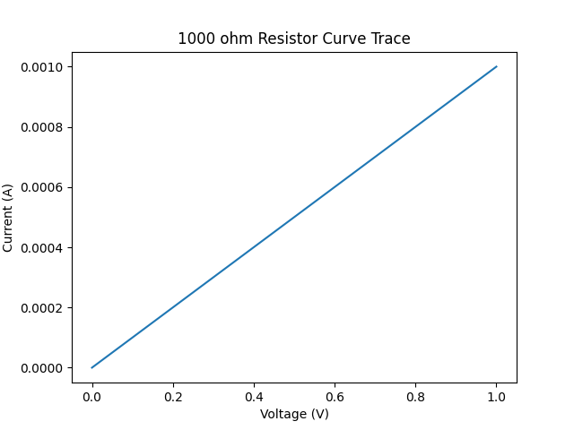
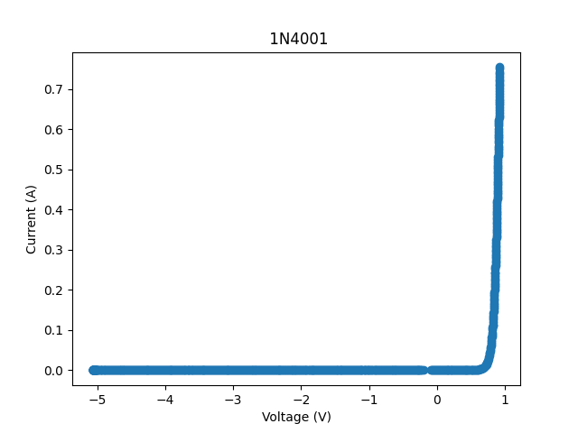

So we have finally covered passive components. Now we can get into some real electronics. For real electronics we need semiconductors. A semiconductor material is basically a material that can be manipulated to make a device that changes its conductivity non-linearly. That is the current through it is not linearly proportional to the applied voltage across it. A semiconductor component is an electronic component that exploits this behavior. Here we will only consider the external behavior of these devices. Not the physics of how this is actually done within the device.
IV CurveThis is a useful tool for understanding semiconductor behavior. Basically we sweep a voltage across a component while also measuring the current through it. Then the voltage is plotted on the X axis and the current is plotted on the Y axis. The IV curve for a resistor is linear:
Here is an IV curve for a 1N4001 diode that I took with my crappy homebrew curve tracer:
As can be observed, no current flows through diode until the voltage is ~0.7V on the positive axis. A diode is in some sense a one way conductor. Current will only flow in one direction through it. Additionally, a diode also has a forward voltage; if the voltage across the diode does not exceed the forward voltage then current will not flow even in the diodes forward direction. As can be obvserved from the curve trace, this forward voltage is only an approximation. Really, the current through a diode is a steep exponential function of the voltage across it.
Current Limited LED Circuit